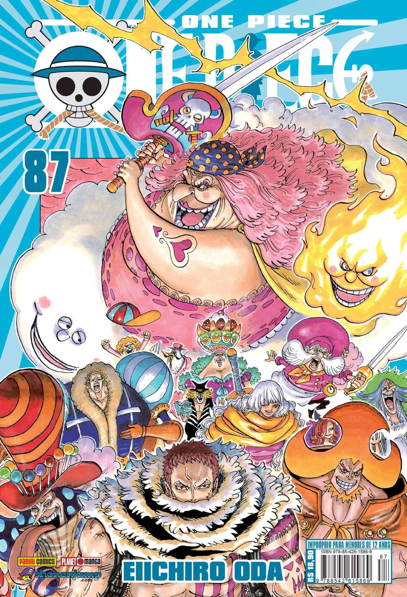
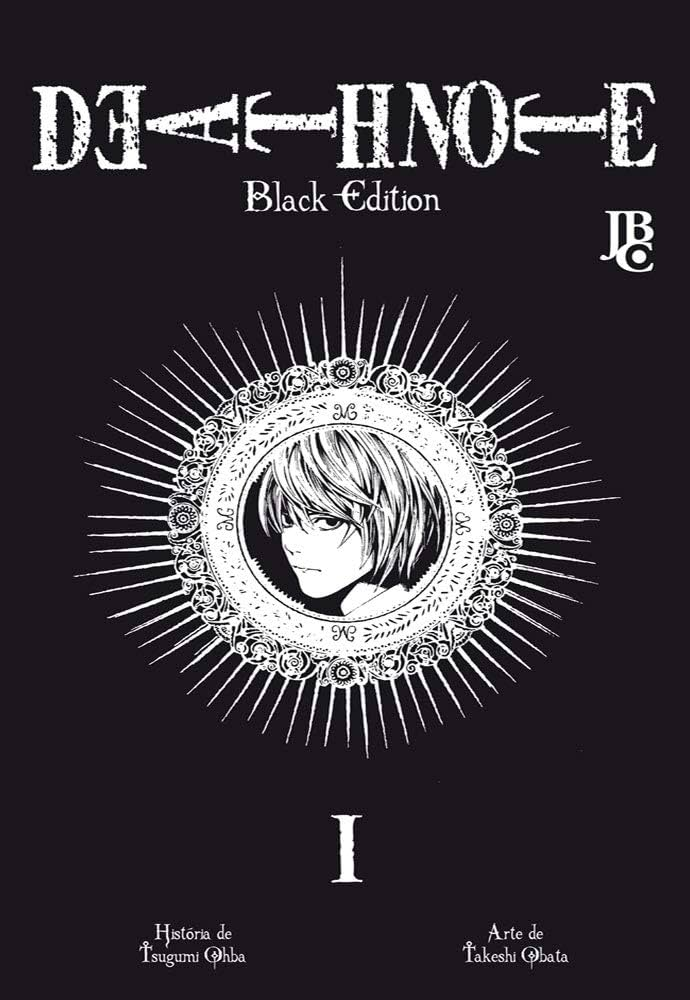

Ranking de popularidade deste mês!
Kimetsu no Yaiba
Escrita por: Koyoharu Gotouge
Desenhada por: Koyoharu Gotouge

One Piece
Escrita por: Eiichiro Oda
Desenhada por: Eiichiro Oda

Jujutsu Kaisen
Escrita por: Gege Akutami
Desenhada por: Gege Akutami

Death Note
Escrita por: Tsugumi Ohba
Desenhada por: Takeshi Obata